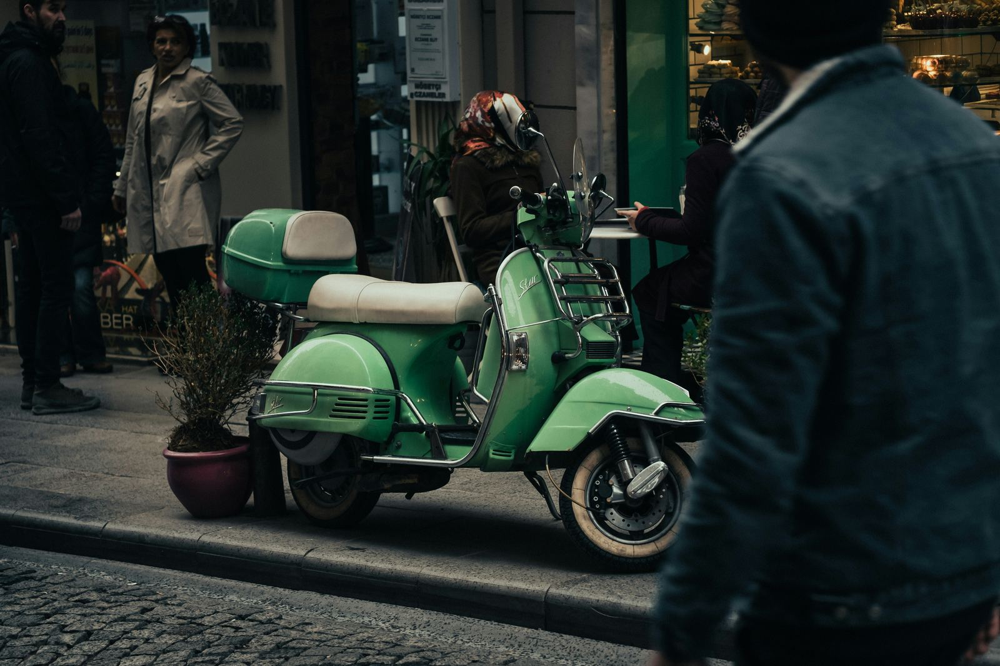

Discover top Italian brands and industry trends. Insights on reputation and consumer favourites.
Scopri i brand italiani più rinomati, le tendenze del settore e gli approfondimenti sulla reputazione e sui preferiti dei consumatori.
KANTAR, nel 2022, ha pubblicato una lista dei 30 brand italiani più preziosi. Questi marchi hanno visto una crescita significativa, raggiungendo un valore combinato di circa 129 miliardi di dollari, in aumento del 12% rispetto all'anno precedente. I settori più influenti sono quelli del lusso, alimentare, utilities, telecomunicazioni e automotive.
Nonostante il loro valore, i brand italiani faticano a emergere a livello globale. Nella classifica annuale di Interbrand sui 100 brand più preziosi, solo tre marchi italiani sono stati inclusi nel 2022: Gucci, Ferrari e Prada. Questi marchi, specialmente nel settore del lusso, hanno registrato notevoli miglioramenti.

Secondo il Reputation Institute, diversi brand italiani si distinguono per la loro reputazione, con aziende come Ferrari, Pirelli, Ferrero e Lavazza tra i migliori al mondo. Questi risultati confermano l'importanza crescente della reputazione aziendale oltre al valore finanziario.
GfK, insieme a altre istituzioni, ha condotto un'analisi sulle preferenze dei consumatori italiani. Marchi come Barilla, Lavazza e Ferrero emergono come preferiti, tenendo conto di variabili qualitative e quantitative come quote di mercato e fedeltà di acquisto.
Nonostante alcuni successi, le aziende italiane, soprattutto le PMI, devono concentrarsi sul brand management per emergere a livello internazionale. Investire nell'innovazione e nella differenziazione del prodotto diventa essenziale in un mercato globale competitivo.

In sintesi, i brand italiani hanno un potenziale enorme, soprattutto quando si tratta di lusso e settori alimentari, ma è necessario un focus più chiaro sul brand management per capitalizzare appieno questa opportunità.
fonte: I principali brand italiani
Parole Chiave
| Marchio | Un simbolo o un nome usato per identificare un prodotto o un'azienda. |
| Valore | Quanto qualcosa è considerato importante o utile. |
| Reputazione | L'opinione generale che le altre persone hanno su qualcuno o qualcosa. |
| Consumatore | Una persona che acquista beni o servizi. |
| Settore | Una parte specifica di un'attività economica o di un'industria. |
| Crescita | Aumento o sviluppo di qualcosa nel tempo. |
| Lusso | Qualcosa di costoso o desiderabile, spesso associato al prestigio. |
| Globale | Relativo al mondo intero. |
| Preferenze | Le cose che una persona preferisce o gradisce di più. |
| Management | L'organizzazione e la gestione di un'attività o un progetto. |
| Investire | Usare tempo, denaro o risorse per ottenere un beneficio futuro. |
| Innovazione | L'introduzione di qualcosa di nuovo o migliorato. |
| Differenziazione | Il processo di rendere qualcosa diverso o unico rispetto agli altri. |
Esercizio
Domande
- Quali sono i settori principali dei brand italiani menzionati nell'articolo?
- Secondo KANTAR, qual è stato un fattore critico di successo per la crescita dei marchi italiani all'estero?
- Quali sono i tre brand italiani inclusi nella classifica globale dei 100 brand a più alto valore finanziario nel 2022 secondo Interbrand?
- Cosa analizza il Reputation Institute riguardo ai brand corporate?
- Qual è la sfida principale per le piccole e medie imprese italiane, secondo l'articolo?